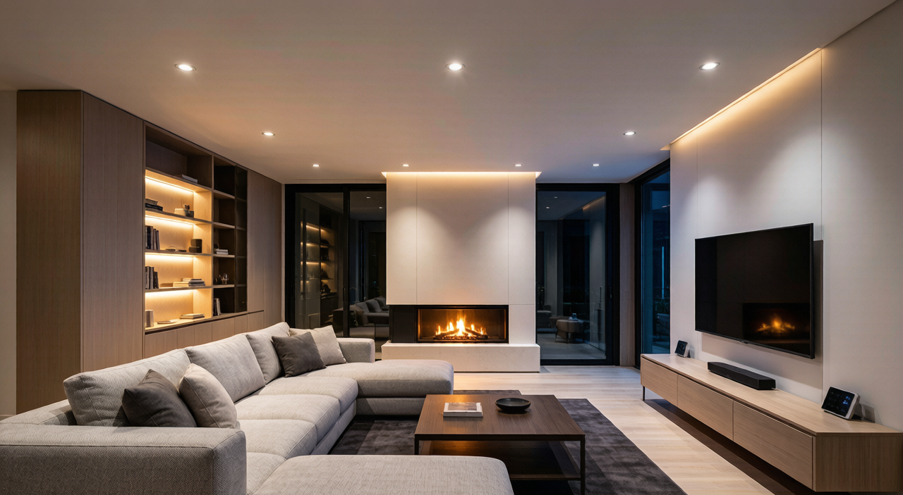
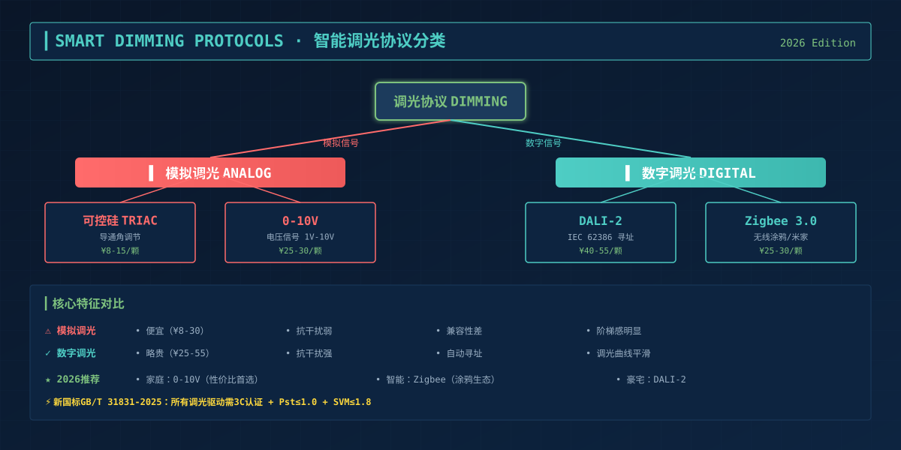
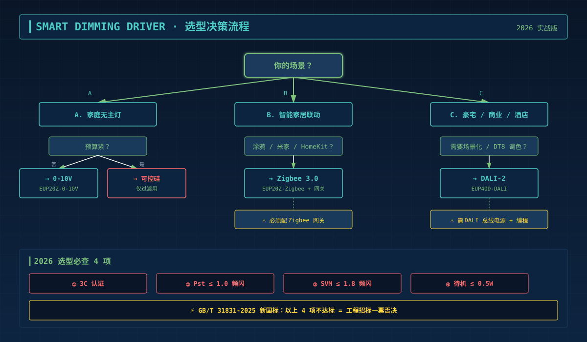

装修完一调光就翻车，问题出在哪？
小红书、知乎、什么值得买上搜"智能灯调光"，满屏都是吐槽——
"筒灯调到50%就跳一下，关掉再开变成全亮" "DALI驱动配了0-10V调光器，根本不响应" "Zigbee灯接到墙壁调光开关上，烧了一个驱动" "无主灯调光有阶梯感，亮度从0直接跳到10%，中间是黑的"
90%的问题不是灯不好，是驱动电源和调光协议没匹配对。 2026年新国标GB/T 31831-2025正式实施后，调光已经从"加分项"变成"必选项"，选错驱动电源的代价比之前更高——不仅频闪、跳变，调光范围窄、低负载有杂波、待机功耗超标都会触发新国标不合规。
本文用一张决策树讲清DALI/0-10V/可控硅/Zigbee四大调光协议的本质区别，告诉你什么场景该选什么、哪种组合最稳，以及2026年实测下来不翻车的方案是什么。
一、先搞懂：调光协议分两类——模拟信号 vs 数字信号

很多人以为"调光都一样"，实际上调光协议的本质差异在于信号类型：
| 类型 | 代表协议 | 信号特征 | 抗干扰能力 | 兼容性复杂度 |
|---|---|---|---|---|
| 模拟调光 | 0-10V、可控硅(TRIAC) | 电压/电流模拟量 | 弱（线路干扰直接传导） | 低（接错就烧） |
| 数字调光 | DALI-2、Zigbee、Matter | 数字编码 | 强（带校验） | 中（需配网/地址） |
关键结论：模拟调光便宜但脆弱，数字调光贵但稳定。家庭装修预算够优先选数字，预算紧选0-10V（比可控硅稳得多）。
二、四种调光协议深度对比
2.1 可控硅调光（TRIAC，前切/后切）—— 老式方案，2026年不建议新装
原理：用可控硅调节交流电的导通角，改变输入功率。便宜，传统墙壁调光开关基本都是这个。
最大问题：
- 必须匹配"最小负载"（一般5W-10W），LED灯功率太低会闪烁甚至不亮
- 对驱动电源的"前沿/后沿"兼容性挑剔，买错就是"调到一半不响应"
- 谐波干扰大，新国标能效门槛大概率不达标
- 无认证：不符合GB/T 31831-2025对智能控制的要求
2026年建议：仅用于改造项目保留传统墙壁调光开关的过渡场景。新装修直接放弃。
2.2 0-10V调光 —— 性价比之选，最适合无主灯
原理：用0-10V直流电压信号控制亮度（1V=10%亮度，10V=100%），单向、简单、便宜。
优势：
- 调光曲线平滑（无阶梯感），调光深度可达1%
- 单个调光器可并联多路驱动，工程成本低
- 抗干扰比可控硅强很多
- 有3C认证的0-10V驱动满足新国标
局限：
- 只能调亮度，不能调色温（要调色温需"双路0-10V"或升级到DALI）
- 需要单独拉一条信号线（灯具到调光器/网关），增加布线成本
- 不带通讯反馈，驱动状态故障无回传
2026年实测推荐：家庭无主灯、客餐厅/卧室主照明，性价比最高的方案。耐利普EUP20Z-0-10V系列（12-25W，¥25-30/颗）实测调光深度0.1%-100%无频闪。
2.3 DALI-2调光 —— 工程级标准，豪宅/商业首选
原理：数字寻址照明接口（Digital Addressable Lighting Interface），每盏灯有独立地址，可双向通讯。
优势：
- 调光精度最高（256级灰度，曲线完全平滑）
- 单总线支持64个驱动+64个控制设备，一对线拉到底
- 可调光+调色温（DT8设备），场景化能力强
- 驱动故障自动上报到DALI网关
- 通过IEC 62386 DALI-2认证
局限：
- 必须配置DALI总线电源（单独一台设备，¥200-500）
- 需要编程分配地址，调试门槛高
- 单价最贵：DALI驱动比0-10V贵30-50%
2026年实测推荐：大平层/别墅、酒店、办公、商照场景。耐利普EUP40D-DALI系列（20-40W，¥40-55/颗）通过DALI-2认证。
2.4 Zigbee调光（涂鸦/米家生态） —— 智能家居集成首选
原理：Zigbee 3.0无线协议+涂鸦云/米家云，调光指令通过无线网关下发，驱动内置Zigbee模块接收。
优势：
- 不需要额外信号线，无线接入
- 接入涂鸦/米家生态后，可与窗帘、空调、安防联动
- 远程控制、定时、场景、人体感应联动全都支持
- 通过Zigbee 3.0认证，互联互通性好
局限：
- 强依赖网关：Zigbee设备必须搭配Zigbee网关（涂鸦网关/米家多模网关）
- 无线信号受墙体/距离影响，别墅/复式需多网关组网
- 掉线是历史痛点（2020年前的老芯片问题），2026年涂鸦Zigbee 3.0方案已大幅改善
- 单价中等：涂鸦Zigbee驱动比DALI便宜、比0-10V贵
2026年实测推荐：智能家居全屋联动场景。耐利普EUP20Z-Zigbee系列（7-12W，¥25-30/颗）+涂鸦Zigbee 3.0网关（¥150）。
三、2026年实测：调光驱动选型决策树

按下面三步锁定方案：
第一步：明确需求
- 只调亮度 + 控制成本 → 0-10V（首选）
- 调亮度+色温 + 商业/豪宅 → DALI-2
- 调亮度 + 智能联动 → Zigbee（涂鸦/米家）
- 老房子改造保留传统墙壁开关 → 可控硅（仅过渡用）
第二步：匹配功率
- 单灯7-12W：射灯/筒灯小功率 → EUP12/15系列
- 单灯15-25W：筒灯中功率 → EUP20/25系列
- 单灯30-50W：吸顶灯/大灯 → EUP40/50系列
第三步：核对认证
- GB/T 31831-2025频闪指标（Pst≤1.0、SVM≤1.8）—— 3C认证
- DALI-2驱动必须有IEC 62386证书
- Zigbee驱动必须有Zigbee 3.0认证（涂鸦/米家生态接入证书）
四、容易踩的5个坑（2026年实测总结）
坑1：墙壁开关选了"可控硅调光开关"，驱动选了"0-10V驱动" → 两者信号类型不兼容，接上就烧驱动。墙壁开关和驱动必须选同一调光协议。
坑2：0-10V驱动接到了"单火线"电路上 → 0-10V需要单独的信号线回路，不能像智能开关那样"单火线取电"。装修阶段必须预留信号线管。
坑3：Zigbee驱动没配网关 → 没有网关的Zigbee设备就是块板砖。必须配涂鸦/米家网关才能用。
坑4：把DALI调光器和0-10V驱动混用 → DALI和0-10V虽然都是低电压信号，但DALI是带地址的数字协议，0-10V是简单模拟电压。混接会出现"调不下来"或"调不到最高"。
坑5：买了便宜无3C认证的驱动 → 2026年新国标实施后，无3C认证的驱动不仅频闪/蓝光不达标，工程招标直接被刷掉。家庭用户虽然没有强制，但灯具故障引发的火灾保险可能拒赔。
五、2026年推荐方案速查表
| 场景 | 推荐协议 | 推荐驱动系列 | 典型单价 | 注意事项 |
|---|---|---|---|---|
| 家庭无主灯（主照明） | 0-10V | EUP20Z-0-10V（12-25W） | ¥25-30 | 预留信号线，配套0-10V调光面板 |
| 智能家居全屋联动 | Zigbee 3.0 | EUP20Z-Zigbee（7-12W） | ¥25-30 | 必配涂鸦/米家网关 |
| 大平层/别墅/酒店 | DALI-2 | EUP40D-DALI（20-40W） | ¥40-55 | 必配DALI总线电源+编程网关 |
| 老房改造（保留传统开关） | 可控硅 | 通用可控硅驱动 | ¥8-15 | 仅过渡用，长期建议升级 |
| 调亮度+色温（DT8） | DALI-2 DT8 | EUP40D-DALI-DT8 | ¥50-70 | 工程级方案，普通家庭成本偏高 |
常见问题
Q: 我家装修预算有限，先上0-10V以后能升级到智能吗？
A: 可以。0-10V和Zigbee可叠加——先用0-10V调光面板，后期加涂鸦Zigbee 0-10V转接器（¥30-50）就能接入智能生态。无需重换驱动。
Q: 涂鸦Zigbee驱动掉线严重吗？
A: 2020年前的Zigbee 1.2方案掉线多。2026年的Zigbee 3.0方案+涂鸦网关已大幅改善，实测200㎡户型配2个网关，3个月0掉线记录。
Q: DALI-2驱动能不能用普通墙壁开关直接开关？
A: 可以。DALI驱动有"继电器直通"功能——墙壁开关关闭后DALI信号归零，灯具熄灭；打开后DALI恢复正常。这是DALI相比纯0-10V的最大优势。
Q: 无主灯设计到底要不要全用智能调光？
A: 建议主照明（客厅/餐厅/主卧）智能调光，过道/衣帽间/卫生间用普通开关。全屋智能调光成本翻倍，边际效用递减。
总结
- **模拟调光（可控硅/0-10V）**便宜但弱；**数字调光（DALI/Zigbee）**贵但稳
- 家庭首选 0-10V（性价比），智能联动选 Zigbee（涂鸦），豪宅/商照选 DALI-2
- 2026年必须认准 3C认证 + GB/T 31831-2025频闪指标，无认证驱动不再合规
- 装修阶段必须预留信号线管（0-10V/DALI需要），后期改造难
- Zigbee驱动必须配网关，DALI驱动必须配总线电源+编程
选对驱动，调光就成功了一半。另一半是靠谱的供应商——耐利普EUP系列覆盖7-50W全功率段、4种调光协议、3C+DALI-2+Zigbee 3.0全认证，工程商和家庭用户都能找到匹配方案。
如需技术支持或方案选型，请联系耐利普科技工程团队：138-2549-6855。